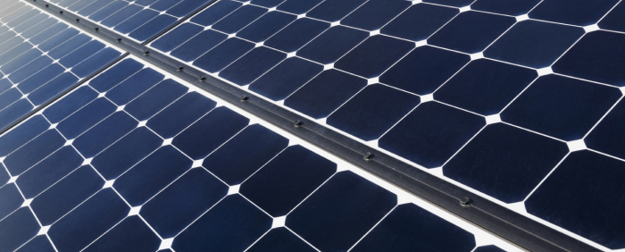
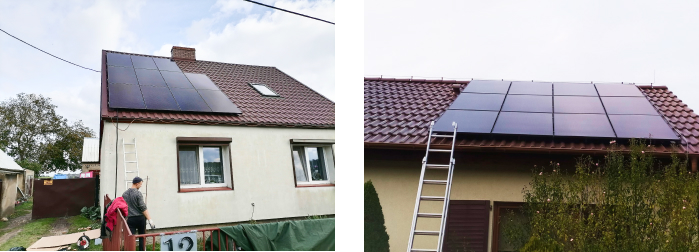
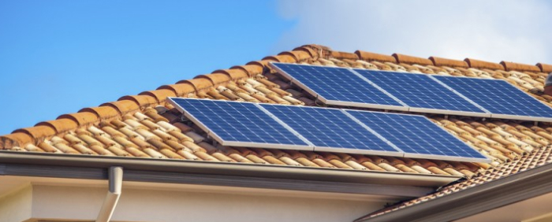

Instalacja
-
Dlaczego Panele Fotowoltaiczne
Jako firma Foton-Tech zapewniamy kompleksową obsługę od zaprojektowania systemu
poprzez dostarczanie urządzeń po ich instalację oraz przyłączenie do sieci. Pomagamy w
załatwieniu wszystkich potrzebnych dokumentów i formalnośći związanych z przyłączeniem
instalacji do sieci eneregtycznej. Zadowolenie naszych Klientów jest dla nas sprawą
najważaniejszą, dlatego też dokładamy wszelkich starań, aby zamówienia były realizowane
błyskawicznie, a oferowany towar był najwyższej jakości. -
RIle i jakiego rodzaju paneli słonecznych
będziesz potrzebować?Zależy to od wielu czynników, w tym od dostępnej przestrzeni, miejsca zamieszkania i ilości

pieniędzy, które musisz wydać na panele słoneczne. Niektóre panele słoneczne są znacznie
bardziej wydajne, ale znacznie droższe. Niektóre mniej wydajne typy paneli słonecznych są
tańsze, ale będą wymagać zakupu większej liczby paneli słonecznych, aby zrekompensować ich
opóźnienia w wydajności. Może mieszkasz w obszarze, w którym nie ma dużo słońca. Może
mieszkasz w okolicy, która cieszy się obfitością słońca. Są to wszystkie czynniki, które należy
wziąć pod uwagę przy wyborze właściwych paneli słonecznych i określeniu, który system jest
odpowiedni dla twoich potrzeb mieszkaniowych.Istnieją trzy główne typy paneli słonecznych: monokrystaliczne krzemowe panele słoneczne,
polikrystaliczne krzemowe panele słoneczne i cienkowarstwowe ogniwa słoneczne. Są one
wymienione w kolejności malejącej od wydajności paneli i kosztów. Monokrystaliczne krzemowe
panele słoneczne są najbardziej wydajnymi panelami, ale mają wyższą cenę niż
cienkowarstwowe ogniwa słoneczne. Cienkowarstwowe ogniwa słoneczne są świetne, jeśli masz
dużo miejsca, ponieważ kosztują mniej, ale musisz zainstalować ich więcej, aby uzyskać te same
korzyści i zwrot energii. Ale większość właścicieli domów nie ma wystarczającej ilości miejsca na
tego rodzaju ogniw słonecznych. Wszystko jest kompromisem, badając zalety i wady każdego
rodzaju. -
Rozpoczęcie procesu instalacji
Jeśli przeprowadziłeś badania, skontaktowałeś się z naszą firmą instalacyjną i jesteś gotowy

do instalacji, to jak szybko zaczniesz zauważać zwrot z inwestycji?Średni okres zwrotu instalacji wynosi od 5 do 7 lat. Przyjmując, że
instalacja będzie pracowała bezawaryjnie przez minimum 25 lat
to 18 lat generuje się zyski ( i więcej).Opowiedzmy również o tym, co tak naprawdę dzieje się po zainstalowaniu paneli słonecznych
w domu i o tym, jak przekształcają światło słoneczne w energię:Po pierwsze, panele słoneczne przekształcają światło słoneczne w prąd stały. Falownik (część
systemu energii słonecznej, który przekształca zmagazynowaną energię w napięcie potrzebne
do zasilania standardowego sprzętu elektrycznego) przekształca tę energię prądu stałego na
prąd przemienny. Twój dom pobiera potrzebną energię w oparciu o liczbę jednostek
elektrycznych wymagających energii. Jeśli mieszkaniowy układ słoneczny jest również
podłączony do sieci, wszelka dodatkowa, nieużywana energia elektryczna jest przekazywana z
powrotem do sieci (lub do baterii, jeśli masz zapasową baterię).
W takich przypadkach zazwyczaj kwalifikujesz się do czegoś, co nazywa się licznikiem netto.
Jest to zasadniczo kredyt przyznawany na rachunek energetyczny od przedsiębiorstwa
energetycznego. Kiedy pobierasz energię z sieci (ponieważ nie masz już wystarczającej ilości
energii słonecznej do zużywania), pomiar netto kompensuje ilość energii, którą oddałeś sieci.
Zasadniczo możliwe jest wyjście z zerowym saldem, ponieważ to, co wkładasz do sieci (z paneli
słonecznych), jest mniej więcej taką samą ilością, jaką pobierałeś z sieci (np. W nocy).Po pierwsze, panele słoneczne przekształcają światło słoneczne w prąd stały. Falownik (część
systemu energii słonecznej, który przekształca zmagazynowaną energię w napięcie potrzebne
do zasilania standardowego sprzętu elektrycznego) przekształca tę energię prądu stałego na
prąd przemienny. Twój dom pobiera potrzebną energię w oparciu o liczbę jednostek
elektrycznych wymagających energii. Jeśli mieszkaniowy układ słoneczny jest również
podłączony do sieci, wszelka dodatkowa, nieużywana energia elektryczna jest przekazywana z
powrotem do sieci (lub do baterii, jeśli masz zapasową baterię).
W takich przypadkach zazwyczaj kwalifikujesz się do czegoś, co nazywa się licznikiem netto.
Jest to zasadniczo kredyt przyznawany na rachunek energetyczny od przedsiębiorstwa
energetycznego. Kiedy pobierasz energię z sieci (ponieważ nie masz już wystarczającej ilości
energii słonecznej do zużywania), pomiar netto kompensuje ilość energii, którą oddałeś sieci.
Zasadniczo możliwe jest wyjście z zerowym saldem, ponieważ to, co wkładasz do sieci (z paneli
słonecznych), jest mniej więcej taką samą ilością, jaką pobierałeś z sieci (np. W nocy).W niektórych ekstremalnie wiejskich miejscach, z ograniczoną lub zerową dostępnością sieci,
możesz zainstalować domowe systemy słoneczne, które nie są podłączone do sieci. Twoja
konwersja światła słonecznego jest taka sama; nie będzie jednak możliwości podłączenia do
sieci, gdy skończy się energia słoneczna. Ten typ słonecznego układu elektrycznego wymaga
znacznego monitorowania zużycia energii, aby upewnić się, że masz wystarczającą ilość energii,
aby przejść przez cały dzień.Zanim cokolwiek zostanie zainstalowane, nasz inżynier skontaktuje się z tobą i oceni twój dom
pod kątem właściwego rodzaju instalacji - pytając cię i konsultując się w następujących
kwestiach:-
Ile będziesz miał słońca
-
Gdzie zostanie umieszczony system (na dachu, na ziemi)
-
Jak duży będzie system, aby zaspokoić twoje potrzeby energetyczne
-
Czy będziesz podłączony do sieci, czy nie do sieci
Po omówieniu tych kwestii, nasz inżynier zaleci najlepszy system słoneczny do potrzeb
mieszkalnych i będzie można rozpocząć proces instalacji paneli słonecznych. -
-
Instalowanie paneli słonecznych
Jeśli chodzi o instalację paneli słonecznych, najlepszym rozwiązaniem jest zatrudnienie

profesjonalisty. Nasi inżynierowie są dobrze zaznajomieni z energią słoneczną, znają sposoby
instalacji, mogą zmaksymalizować zwrot z inwestycji, instalując i ustawiając panele we właściwy
sposób i mogą zagwarantować, że instalację będzie można bezpiecznie używać.Cały proces instalacji trwa średnio około dwóch dni, jednak może się on wydłużyć w zależności
od wielkośći instalacji i miejsca, w którym instalacja będzie zamontowana. -
Konserwacja, naprawa i koszty
Podobnie jak w przypadku każdego rodzaju systemu, trzeba go konserwować. Przegląd można
wykonać raz w roku i sprawdzić pod względem poprawnego działania całej instalacji. Dzięki
temu będzie można cieszyć się wieloletnimi oszczędnościami kosztów energii zainstalowanego
systemu energii słonecznej. -
Jak długo możesz oczekiwać, że twój
układ słoneczny będzie trwał?Większość domowych systemów paneli słonecznych działa przez ponad 25 lat. Jeśli więc
zastanawiasz się nad wysoką ceną tych systemów, spróbuj pomyśleć o oszczędnościach
kosztów energii z tego długiego okresu. -
Podsumowując
Na początku trzeba wnieść pewien wkład finansowy, ale w dalszym etapie generuje to
ogromną korzyść dla twojego portfela i ogromną korzyść dla środowiska. Tempo wzrostu
zużycia energii słonecznej to świetny trend. Po okresie zwrotu, generujesz czysty zysk z
zainstalowanego układu słonecznego.